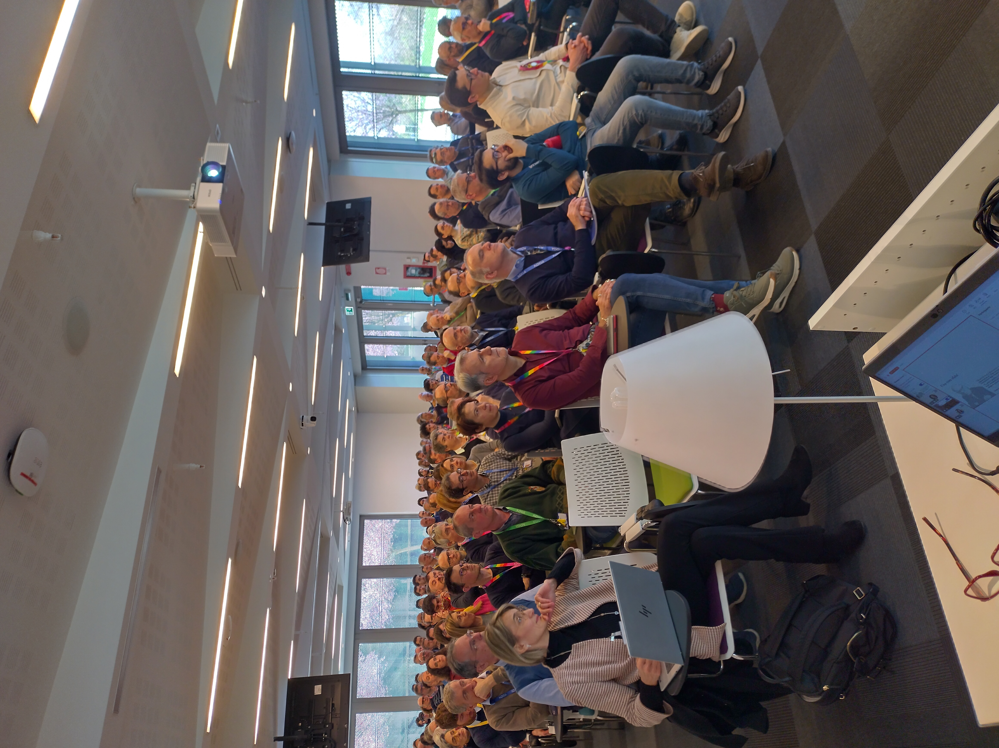
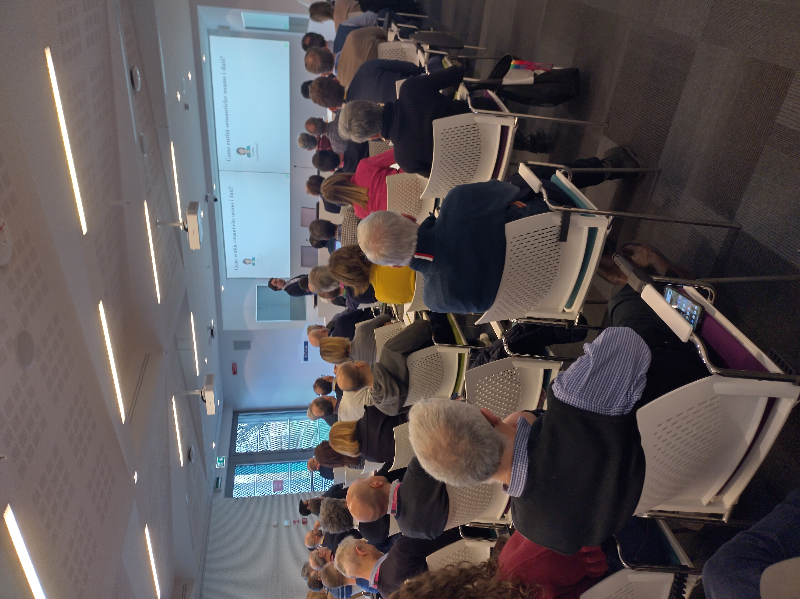
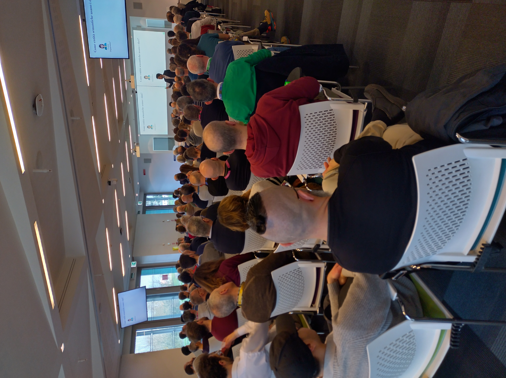
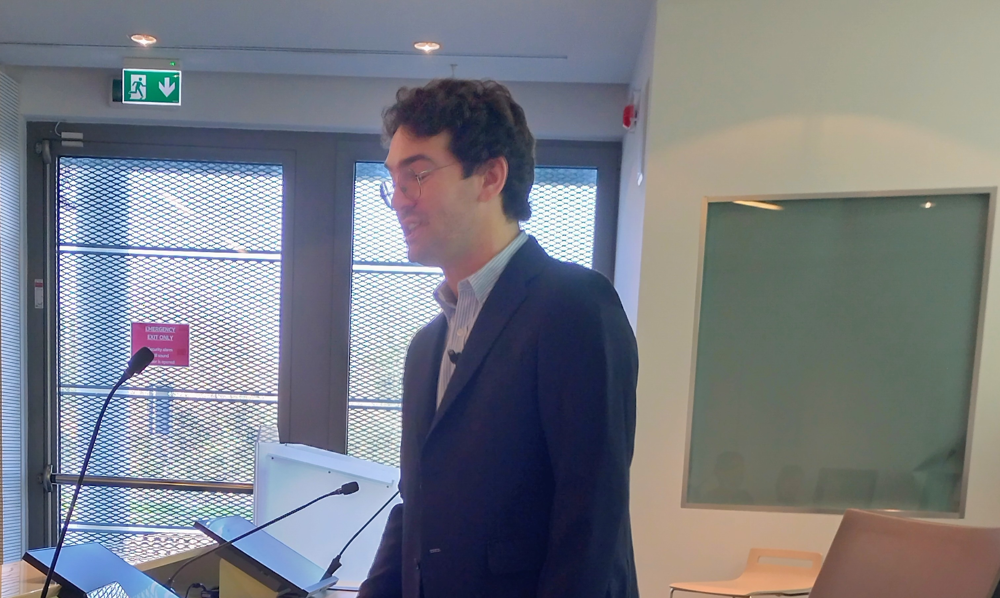
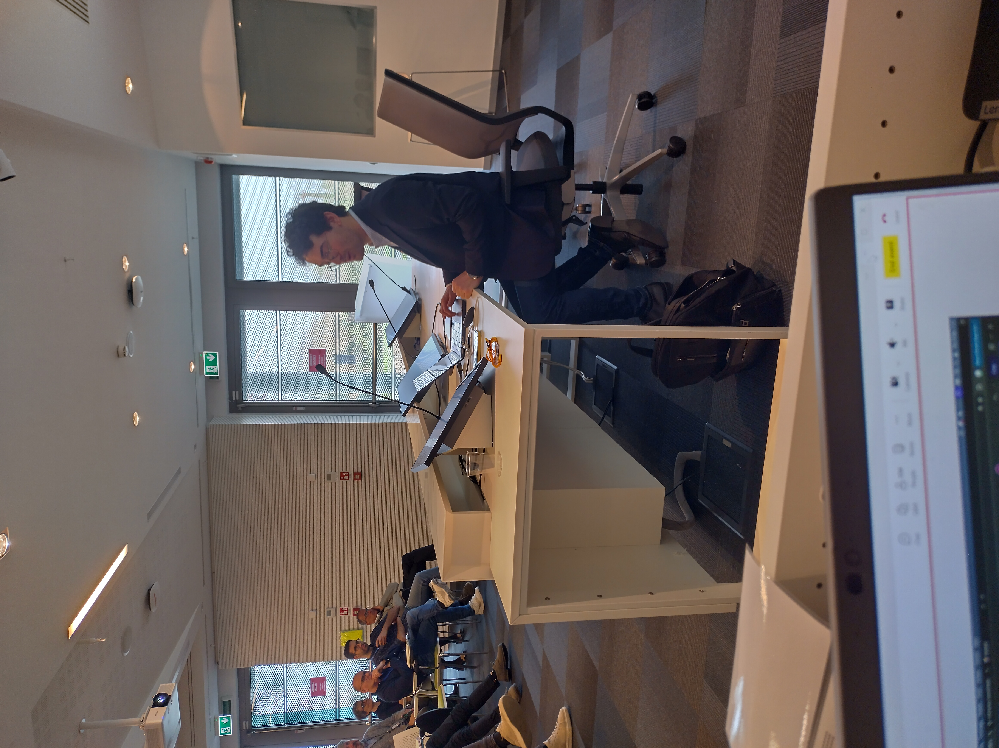
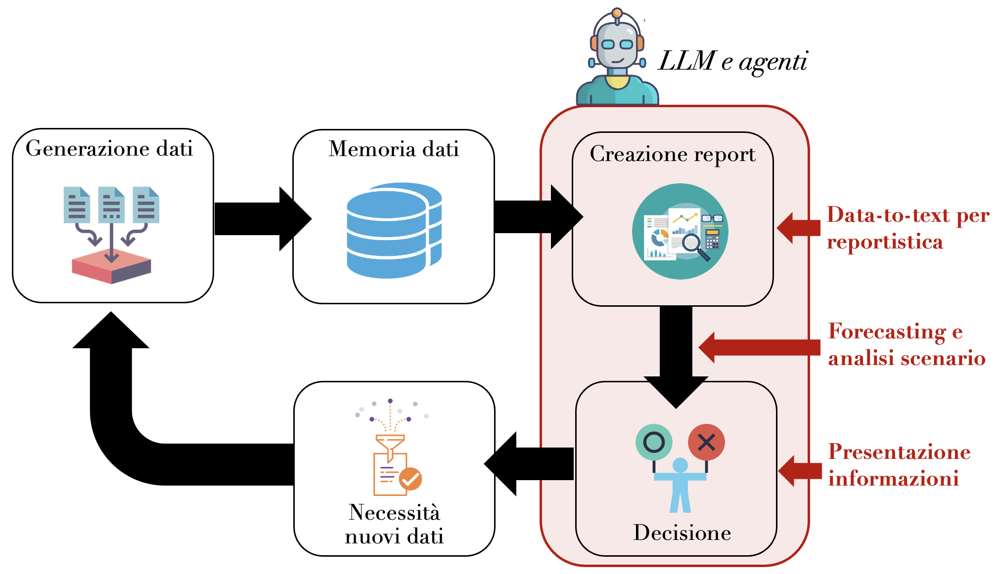
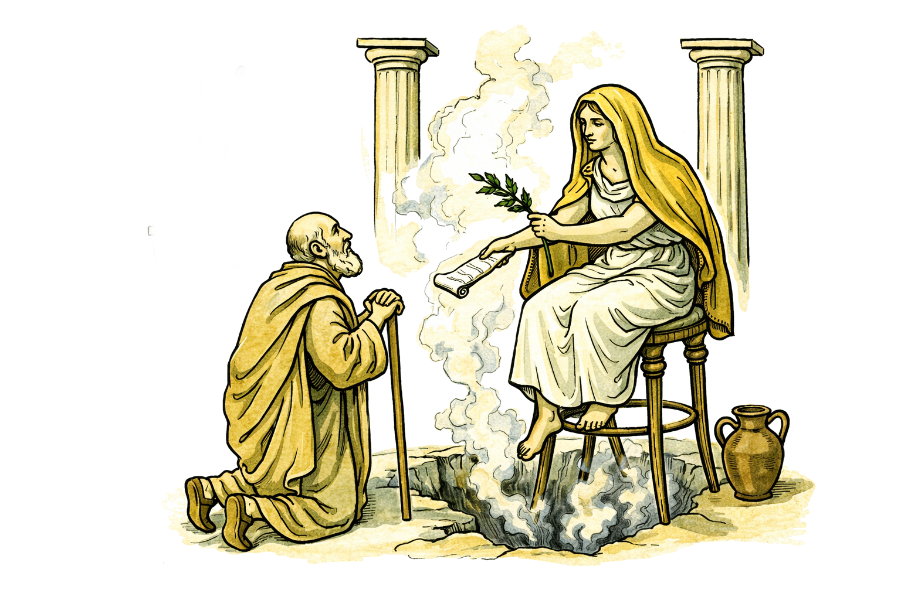
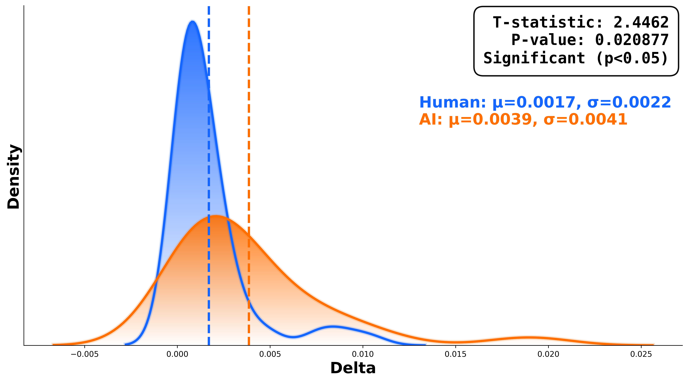

Lesson 1: Data-to-text for reporting
Focus on identifying problems in data, accessing and visualizing datasets, recognizing patterns, and creating coherent reports through dialogue with chatbots and code interpreters.
This three-lecture cycle explored how teams can use generative AI to move from raw data to practical decisions. The course was delivered through Cefriel. The sessions progressed from data interpretation, to forecasting and scenario analysis, and then to storytelling and presentation design.






Focus on identifying problems in data, accessing and visualizing datasets, recognizing patterns, and creating coherent reports through dialogue with chatbots and code interpreters.
Discussion of what makes a prediction reliable, model taxonomies, qualitative and quantitative scenario methods, and AI-supported expert-board/Delphi workflows for uncertainty-aware decisions.
Work on storytelling for coordination, contextual prompting, framing and personalization, and practical techniques to design presentations and reusable AI skills.


